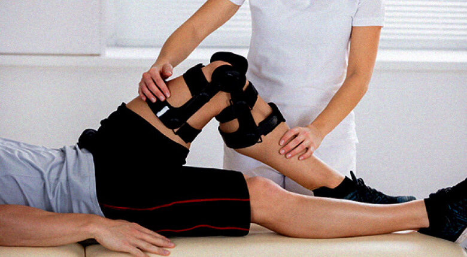
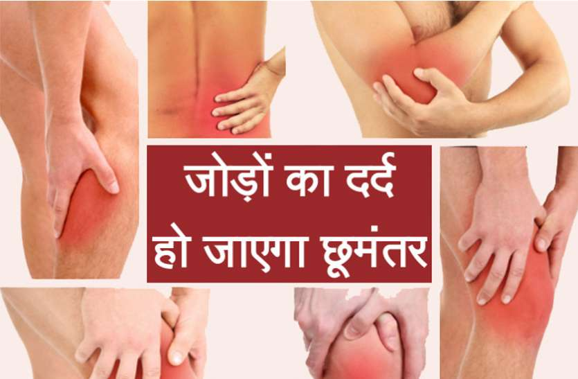
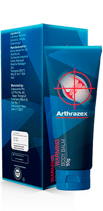
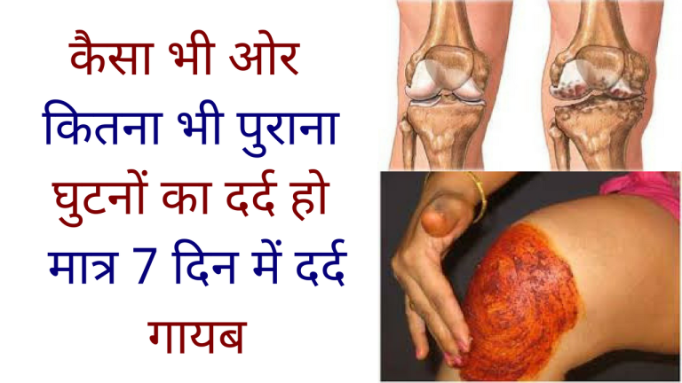

- | 14:17
- 43.846
- 13
पुरे जीवन काल में पीठ दर्द या जोड़ों का दर्द नहीं होगा:मिथ्या या सच्चाई?
जोश स्मिथ अनुभवी जन स्वास्थ्य विशेषज्ञ। दवाओं और कोर्सेट व ऑर्थोज़ पहने बिना, मस्कुलोस्केलेटल सिस्टम को बहाल करने की एक वैकल्पिक विधि के लेखक। उनका सिद्धांत मुख्यतः मानव शरीर और उसकी क्षमताओं की समझ पर आधारित है। प्रैक्टिस का अनुभव: 40 वर्ष से भी अधिक
"ऐसे लोगों पर कतई विश्वास न करें जो आपसे कहते हैं कि उम्र बढ़ जाने पर जोड़ों की बीमारियों का इलाज नहीं किया जा सकता"
जॉश स्मिथ का मानना है कि आप कुछ ही समय में जोड़ों के दर्द से और यहाँ तक कि ओस्टियोकोन्ड्रोसिस की सबसे गंभीर स्थिति से भी छुटकारा पा सकते हैं। अपनी 40 साल की प्रेक्टिस के दौरान उन्होंने कई बार यह साबित किया है। आमतौर पर, अपने व्यस्त कार्यक्रम के कारण, जॉश स्मिथ खुद कभी इंटरव्यू नहीं देते हैं और अपने सहायकों को भेज देते हैं। लेकिन हम भाग्यशाली थे कि प्रमुख सार्वजनिक स्वास्थ्य विशेषज्ञ ने हड्डी और जोड़ों की बहाली के अपने सिद्धांत की मूल बातें हमें बताने के लिए हमें अपना समय दिया।

इंटरव्यू आरती अग्रवाल द्वारा
नमस्ते, क्या यह सच है कि बुजुर्ग लोग जोड़ों तकलीफों और ओस्टियोकोन्ड्रोसिस से नहीं बच सकते हैं?
हैलो आरती। यह सच नहीं है। ऑस्टियोकांड्रोसिस को किसी आम बीमारी की तरह ठीक नहीं किया जा सकता। लेकिन अधिकतर ऐसा देखा गया है कि इसके इलाज में देर हो जाती है और वह ठीक से नहीं किया जाता। अधिकतर स्वास्थ्य विशेषज्ञ इलाज उपयोग करते हैं जिससे पेशेंट के स्वास्थ्य पर उल्टा प्रभाव पड़ता है सच तो यह है कि किसी भी उम्र में शरीर की किसी भी हड्डी को ठीक किया जा सकता है।
अगर आप यह छोटा सा राज जान जाए तो आप जोड़ों की तकलीफें खुद ठीक कर पाएँगे। इसके लिए आपको घर से निकलने की जरूरत भी नहीं पड़ेगी। मेरी सलाह से एक हजार से ज्यादा मरीजों को मदद मिली है।

और ये सीक्रेट क्या है?
वास्तव में यह सीक्रेट तो बहुत ही सरल है। हमें दर्द की जड़ को समझने की जरूरत होती है। आज मेडिकल एनसाइक्लोपीडिया में ऑस्टियोकांड्रोसिस और ऑस्टियोआर्थराइटिस के करीब 147 कारण दिए गए हैं, लेकिन वास्तव में इन सब का परिणाम एक ही होता है। जोड़,रीढ़ की हड्डी और गद्दी की लचक चली जाना, जिससे दर्द होता है। आपको पता है यह क्यों होता है? इसलिए क्योंकि रक्त का प्रवाह ठीक से नहीं होने के कारण ये घिस जाते हैं।
पूरा रहस्य बस यही है, रक्त प्रवाह को बहाल करना ज़रूरी है।
तो क्या 45 के बाद भी रक्त प्रवाह वापस ठीक करना संभव है?
मैं तो एक कार-एक्सीडेंट के बाद व्हीलचेयर छोड़ने में कामयाब हो गया था, और ये मेरे 45 वें जन्मदिन से कहीं बड़ी चीज थी।
क्या आप व्हीलचेयर पकड़े हुए दूसरे लोगों को भी बचा पाते हैं?
हाँ, बहुत बार बचाया है। लेकिन मेरे अधिकतर पेशेंट 40 साल से ऊपर की उम्र के ऐसे लोग हैं जिन्हें लंबी बीमारी ने पकड़ लिया है। लोग मेरे पास ऑस्टियोकांड्रोसिस ऑस्टियोआर्थराइटिस या रेडिकुलाइटिस जैसी दिक्कतों के साथ आते हैं। ये बीमारियां आदमी को पूरा तोड़ देती हैं और आदमी अपना सामान्य जीवन नहीं जी पाता।
लोग दर्द की शिकायत करते रहते हैं और कहते हैं कि उन्हें चलने में दिक्कत होती है। मेरे कई पेशेंट तो दर्द से रोने लगते हैं और कहते हैं: "आखिर मेरे साथ ही ऐसा क्यों हो रहा है?" " मैंने ऐसा कौन सा पाप किया है कि मुझे यह सजा मिली?" और मैं उन्हें साफ-साफ बताता हूँ: "अब रोना-धोना बंद करो और अपने रक्त प्रवाह को फिर से ठीक करने की कोशिश करो।"
आप इस उम्र में भी रक्त प्रवाह कैसे वापस ठीक कर देते हैं?
कुछ समय पहले ही, मैंने एक भिन्न तरीके से अपने मरीज़ों का इलाज़ करना शुरू किया था, जिसमें 96 शारीरिक व्यायाम शामिल हैं। यह तरीका बहुत अच्छा था, पर दुर्भाग्य से बहुत से लोगों के लिए इतने ज़्यादा व्यायाम करना मुश्किल था।
सबके पास जिम जाने के लिए हमेशा समय नहीं होता था। मुझे पक्का विश्वास था कि रक्त का प्रभाव वापस ठीक करने के लिए कोई आसान और ज्यादा मॉडर्न तरीका जरूर होगा, और मैंने उसे ढूंढ लिया।
आप किस तरह के तरीके की बात कर रहे हैं?
मैं अनूठी दवा की बात कर रहा हूँ। इसकी मदद से, लोग न केवल पीठ और जोड़ों के दर्द को भूल सकते हैं, बल्कि जोड़ों के स्वास्थ्य को कुछ ही महीनों में बहाल कर सकते हैं।
इस फार्मूला को डिवेलप करने में पंद्रह लाख डॉलर से भी ज्यादा खर्च किए गए थे और देश में इसकी डिस्ट्रीब्यूटरशिप लेने के लिए डेढ़ करोड़ डॉलर का भुगतान किया गया है।
यह जबर्दस्त प्रोडक्ट काम कैसे करता है?
इसमें कोई चमत्कार नहीं है; यह सरल सा विज्ञान है। में 35 सक्रिय अवयव है जो पुरानी कमजोर हो चुकी कोशिकाओं को अपने संपर्क में आते ही ठीक कर देता है जिससे वह 10 गुना ज्यादा तेज काम करने लगती हैं। यही कारण है कि कोशिकाएं धीरे-धीरे अपनी ताकत वापस पा लेती हैं।
शरीर की प्रभावित जगह पर पहली बार लगाने के बाद से ही 93,000 से भी ज़्यादा कोशिकाएँ सक्रिय हो जाएंगी। रक्त के प्रवाह के लिए यह बहुत ही उपयोगी होता है। यह इलाज ऐसे ही काम करता है। इसमें सबसे महत्वपूर्ण चीज यह है कि इसका उपयोग सिस्टमैटिक तरीके से किया जाना चाहिए।
यह प्रोडक्ट तो बहुत ही बढ़िया लग रहा है, लेकिन हम यह जानना चाहते हैं कि आम बीमारियों से ग्रस्त लोगों के लिए इसके क्या मायने हैं?
केवल एनलजेसिक दवा नहीं है, यह शरीर का "पुनरुद्धार" करती है। यह थोड़े ही समय में क्षतिग्रस्त कोशिकाओं को बहाल करती है, दर्द के कारण को खत्म करती है और जोड़ों और कशेरुकाओं को उनकी मूल स्थिति में वापस पहुँचा देती है। आपको केवल लक्षणों से छुटकारा नहीं मिलता है, दर्द और विकृति के कारण को दूर करती है।
उपयोग के पहले ही दिन से, शरीर की बहाली की प्रक्रिया को शुरू कर देती है और दर्द से राहत पहुँचाती है। इस उपाय को औसतन दो से तीन सप्ताह तक इस्तेमाल करने की ज़रूरत है जब तक कि सभी लक्षण समाप्त न हो जाएँ। लेकिन ध्यान रहे कि इस कोर्स को दोहराते रहें जिससे कि यह बीमारी दोबारा वापस न आए।

बताइए, क्या का उपयोग केवल ऑस्टियोआर्थराइटिस और ओस्टियोकोंड्रोसिस के लिए ही किया जाता है?
नहीं। से कोशिका के स्तर पर असर होता है और रक्त प्रभाव वापस ठीक हो जाता है। इससे जोड़ों और रीढ़ की हड्डियों की सभी प्रकार की बीमारियाँ ठीक हो जाती हैं जैसे: ऑस्टियोआर्थ्रोसिस और आर्थराइटिस, साइटिका, गठिया, रेडिकुलाइटिस, वर्टेब्रल हर्निया, चोट, फ्रैक्चर आदि। इन सभी मामलों में का बहुत ही अच्छा असर होता है।
क्या मैं सही समझ रहा हूँ कि केवल जोड़ों के दर्द से राहत ही नहीं पहुँचाती है?
बिलकुल सही। पहले दर्द से राहत पहुँचाती है और बाद में हड्डी के ऊतकों का पुनरुद्धार करती है। सबसे सरल, सबसे प्रभावी और सबसे किफायती तरीका है।
ज़्यादातर लोग जानना चाहते हैं कि इसे कहाँ से खरीदा जा सकता है।
हमने पहले इसे दवा की दुकानों में बेचने का प्लान किया था लेकिन उन लोगों से एग्रीमेंट नहीं हो पाया क्योंकि से इनका बिजनेस बहुत कम हो जाता। लोग जोड़ों और पीठ के दर्द के इलाज के दूसरे प्रोडक्ट खरीदना बंद कर देंगे क्योंकि सच्चाई तो यही है कि ये सिर्फ लक्षणों में आराम देते हैं और रोगों को जड़ से खत्म नहीं करते।
इसलिए अब हम इसे केवल ऑफिशियल वेबसाइट पर ही बेचते हैं।
और इसके वैसे कई फायदे हैं। हम इसे बिना किसी मध्यस्थ के सीधे बेचते हैं। इससे रेट कम रखने में मदद मिलती है और रिटेल रेट से 5.5% सस्ता हो जाता है।
प्रोडक्ट डाक से भेजा जाता है और पेमेंट डिलीवरी आने पर करनी पड़ती है। इलाज को घर पर ही खुद किया जा सकता है इसलिए किसी स्वास्थ्य विशेषज्ञ से परामर्श की जरूरत भी नहीं पड़ती। आपको मेरी बात पर पूरा भरोसा करने की जरूरत नहीं है। यदि आपको दूसरी चीजों से तुलना करके देखनी है तो आप उन्हें भी आजमा कर देख सकते हैं। मुझे पूरा विश्वास है कि आपको से असरदार दूसरी कोई चीज नहीं मिलेगी।
ऐसे खुले इंटरव्यू के लिए आपको बहुत-बहुत धन्यवाद! आखिर में आप हमारे पाठकों से क्या कहना चाहेंगे?
मैं आपके पाठकों का इस ओर ध्यान खींचना चाहता हूँ कि पीठ और जोड़ों के दर्द आज सिर्फ बूढ़े लोगों की दिक्कत नहीं है। कई युवा लोग भी इससे परेशान हो चुके हैं। यदि आपको बहुत हल्का लेकिन बार-बार दर्द होता हो तो इसे गंभीरता से लेना चाहिए।
और याद रखिए: जोड़ों और पीठ की बीमारियों से सिर्फ दर्द ही नहीं होता, इनसे इन अंगों की उम्र 10-15 साल कम हो जाती है।
नोट: जोश स्मिथ जी ने पहले 50 खरीदने वालों को पर खास डिस्काउंट देने का फैसला किया है! और हो सकता है आप किस्मत वाले हों।
13 टिप्पणियाँ
अनिकेत
मैंने अपनी रीढ़ की हड्डी के निचले हिस्से और घुटनों के दर्द के लिए आर्डर किया था। मेरी किस्मत खराब थी कि मुझे डिस्काउंट नहीं मिला क्योंकि डिस्काउंट वाले प्रोडक्ट बहुत जल्दी बिक गए थे। लेकिन इसके रिजल्ट्स ने मुझे आश्चर्य में डाल दिया। हड्डियों और जोड़ों की मेरी पूरी की पूरी बीमारियाँ गायब हो गईं। खरीदने के पहले मैं लगातार 2 साल से दर्द से बहुत परेशान था।
5नवीन चंचल
ठंड में हमेशा मेरे जोड़ों में बहुत दर्द रहता था। मैंने इंटरनेट पर के बहुत अच्छे रिव्यू पड़े थे और इसलिए इसे आर्डर करके देखा। मुझे इससे कुछ खास उम्मीद नहीं थी लेकिन ट्रीटमेंट शुरू करने के एक दिन बाद से ही मुझे बहुत अच्छा महसूस होने लगा! मैं ज्यादा एक्टिव हो गया था लेकिन मेरे जोड़ों में दर्द नहीं हो रहा था। मैं तो इसकी पूरे दिल से सलाह दूंगा।
8लता
मैंने अपने पति के लिए दो महीने पहले का ऑर्डर दिया था। उन्हें बहुत भयंकर पीठ दर्द हो गया था लेकिन अब बहुत आराम मिल गया है। मुझे बहुत राहत मिली है।
7सरफराज़ हुसैन
मुझे आज डिस्काउंट पर मिल गया। डेलीवरी का इंतज़ार है)
1महेंद्र गोसाईं
मेरे ऑफिस के एक आदमी ने लिया था और मुझे भी पैर दर्द के लिए लेने को कहा था। उसके पैरों में भी पहले दर्द रहता था लेकिन मैंने देखा था कि उसने लंगड़ाना बंद कर दिया था। इसलिए मैंने खुद अपने और अपनी मम्मी के लिए ऑर्डर करने का फैसला किया क्योंकि कुछ टाइम के लिए डिस्काउंट मिल रहा था। थैंक्स)
3सानिका राणे
मैंने पिछले 5 सालों में कई क्रीमें, पैच और गोलियां लेकर देखीं हैं लेकिन एक भी चीज से जोड़ों के दर्द में कोई फायदा नहीं हुआ। किस्मत से मेरी बहन ने एक दिन मुझे लेने को कहा, इसके बाद तो मेरे जोड़ों का दर्द गायब ही हो गया।
9अनामिका कुमारी
बहुत बढ़िया इंटरव्यू है। मैं भी ऑर्डर कर रही हूँ।
11जगदीश नेमा
बहुत जबर्दस्त चीज है! अभी 1 हफ्ता हुआ है बस और बहुत फायदा हुआ है।
13प्रीति शिवहरे
मेरी बेटी ने मेरे लिए ऑर्डर किया था। मुझे इन चीजों में एक परसेंट का भरोसा नहीं है, लेकिन अब मानना पड़ेगा कि से अच्छी कोई चीज नहीं है।
7निर्मल जैन
मैंने एक हफ्ते पहले ऑर्डर की थी लेकिन कल ही मिली। पेमेंट डेलीवरी के बाद करना पड़ता है। मैं कल से ही उपयोग करना शुरू कर दूँगी।
2पंकज तिवारी
मैं पूरी जिंदगी पीठ के दर्द से परेशान रहा हूँ। यह हमारे परिवार में ही है। मैंने कई तरह के हड्डियों के स्वास्थ्य विशेषज्ञ, फिजियोथैरेपिस्ट और हकीमों वगैरह को भी दिखाया है। पिछले कुछ सालों में तो मैं अपने जूते की लेस तक नहीं बांध पा रहा था। मैंने के बहुत अच्छे रिव्यू पड़े थे लेकिन पता नहीं क्यों इसे तुरंत आर्डर करने में डर सा लगता था। आज सोचता हूँ कि काश इसे और पहले उपयोग करना शुरू कर दिया होता तो कितना अच्छा होता। मेरी पीठ ऐसी अच्छी 17 की उम्र के बाद पहली बार लगी है! मैं तो हर एक व्यक्ति को की सलाह दूंगा।
3रश्मि सिरमौर
मैं पिछले 3 साल से पीठ का इलाज करवा रही हूँ। उम्मीद है से ऑर्डर मिल जाएगा। मैंने ऑर्डर किया और फोन पर लड़की ने मुझे सब ठीक से समझा दिया। अब मैं पैकेज का इंतज़ार कर रही हूँ।
12दिनेश गजभिए
मैंने तो डिस्काउंट में ऑर्डर ले लिया था। फोन पर लड़की ने बताया कि डिस्काउंट में कुछ ही पीस बचे हैं। यदि पैसे बचाने हों तो जल्दी करें!
5